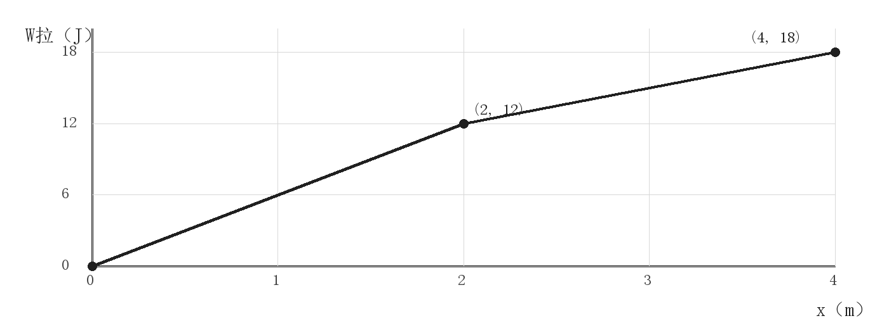
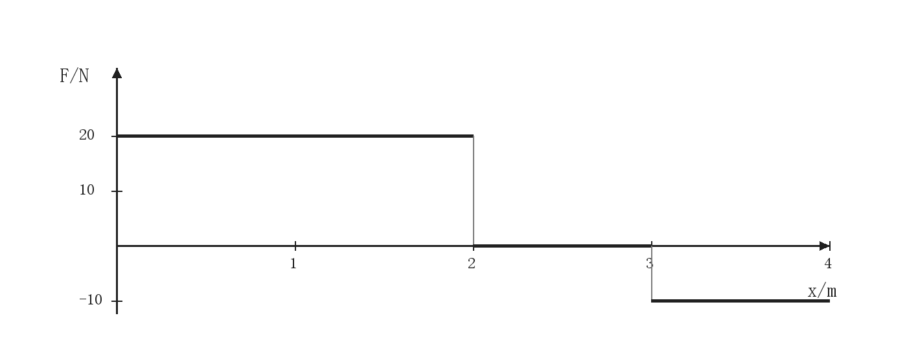
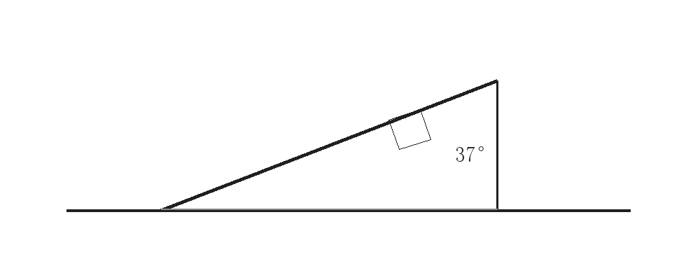
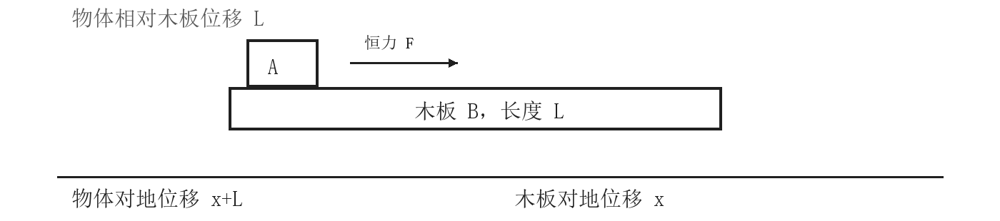

高中物理与数学课堂讲义
功与动能定理
一、功与动能定理
恒力对物体做功 W=Fs cos θ。s 是受力物体对地的位移，功的正负由力和位移的夹角决定。动能定理中，W合是所有力做功的代数和。
W合 = ΔEk = ½mv² - ½mv₀²
W-x 图像的斜率可求力；F-x 图像与 x 轴围成的面积表示功。
二、真题例题
（2023·山西）一质量为 1 kg 的物体在水平拉力作用下，由静止开始在水平地面上沿 x 轴运动，出发点为 x 轴零点。拉力做的功 W 与物体坐标 x 的关系如图所示。物体与地面间的动摩擦因数为 0.4，g 取 10 m/s²。下列说法正确的是（多选）

A. x=1 m 时，拉力的功率为 6 W。
B. x=4 m 时，物体的动能为 2 J。
C. 从 x=0 到 x=2 m，物体克服摩擦力做功 8 J。
D. 从 x=0 到 x=4 m，物体的最大动量为 2 kg·m/s。
解：
题源：2023 年山西高考物理多选题。真题题型与答案核对，正确选项 BC。
真题解析
0≤x≤2 m 时，W-x 图像斜率为 6 N；2≤x≤4 m 时斜率为 3 N。摩擦力 f=μmg=4 N。
x=1 m 时，合功为 6-4=2 J，故 v=2 m/s，拉力功率 P=Fv=12 W，A 错。x=4 m 时，Ek=18-4×4=2 J，B 对。从 0 到 2 m，摩擦功为 -8 J，克服摩擦力做功为 8 J，C 对。
0 到 2 m 的合力为 2 N，动能增加；2 到 4 m 的合力为 -1 N，动能减少。x=2 m 处动能最大，为 4 J，最大动量为 2√2 kg·m/s，D 错。
三、图像题
19．长为 4 m 的水平轨道 AB 与倾角为 37° 的足够长斜面 BC 在 B 处连接。一质量为 2 kg 的滑块从 A 点由静止开始，受水平向右的力 F 作用，F 随位置 x 的变化如图所示。滑块与 AB、BC 间的动摩擦因数均为 0.25，g 取 10 m/s²。


（1）求滑块到达 B 处时的速度大小。
（2）不计滑块在 B 处的速率变化，求滑块冲上斜面后最终静止的位置与 B 点的距离。
解：
题源：随课资料《高三物理-3-.pdf》第 14 页第 19 题，图按题面数据重绘。
参考答案
水平段拉力做功 20×2+0×1-10×1=30 J，摩擦功为 -0.25×2×10×4=-20 J。由动能定理，½×2vB²=10，得 vB=√10 m/s。
斜面上重力沿斜面分力为 12 N，摩擦力为 4 N。由动能定理，10-(12+4)s=0，故 s=0.625 m。
四、板块问题
7．质量为 M、长度为 L 的木板静止在光滑水平地面上。质量为 m 的小物体放在木板最左端，现用水平恒力 F 作用在小物体上，使物体从静止开始做匀加速直线运动。物体和木板之间的摩擦力大小为 f。当物体滑到木板最右端时，木板对地位移为 x。判断下列说法是否正确。

A. 物体克服摩擦力做功为 fL。
B. 水平恒力 F 对小物体做功为 FL。
C. 物体到达木板最右端时的动能为 (F-f)(L+x)。
D. 木板到达最右端时的动能为 f(x+L)。
解：
题源：随课资料《高三物理-3-.pdf》第 7 页第 7 题。
参考答案
物体相对木板移动 L，木板对地移动 x，所以物体对地位移为 L+x。恒力对物体做功 F(L+x)，摩擦力对物体做功 -f(L+x)，故 C 正确；木板受摩擦力做功为 fx。A、B、D 错。
函数的概念与定义域
一、函数的概念
当一个变量 x 的每个允许取值，都按照同一个对应规则得到唯一的 y 时，y 是 x 的函数，记作 y=f(x)。允许输入的 x 的集合叫做定义域；所有实际输出的 y 的集合叫做值域。
同一个输出可以由不同输入得到。例如 f(x)=x² 中，f(-1)=f(1)=1；这仍然是函数。判断时看同一个输入是否对应两个不同输出。
例：数对 (-1,2)、(0,2)、(1,3) 表示函数；若再加入 (0,4)，输入 0 就对应两个输出，不再表示函数。
二、由解析式求定义域
分式的分母不能为 0；偶次根式中的被开方数不小于 0；对数的真数大于 0。若有多项限制，分别列出后取交集。
例：f(x)=√(x+1)/(x-2)。根式要求 x≥-1，分母要求 x≠2，因此定义域为 [-1,2)∪(2,+∞)。约分不能把原函数排除的点加回定义域。
三、课堂练习
1. 判断数对 (-1,2)、(0,2)、(1,3) 是否表示函数；添加 (0,4) 后呢？
答：
2. 求 f(x)=√(2x+3)/(x-1) 的定义域。
答：
3. 求 g(x)=ln(5-x)/(x+2) 的定义域。
答：
4. 周长为 24 cm 的矩形一边长为 x cm，另一边长为 12-x cm。写出面积 S 关于 x 的函数，并写出 x 的取值范围。
答：
练习参考答案
1. 原数对表示函数；加上 (0,4) 后不再是函数，因为输入 0 对应两个不同输出。
2. 2x+3≥0 且 x≠1，定义域为 [-3/2,1)∪(1,+∞)。
3. 5-x>0 且 x+2≠0，定义域为 (-∞,-2)∪(-2,5)。
4. S(x)=x(12-x)，且 0<x<12。
函数的奇偶性与单调性
一、函数的单调性
在区间 I 内任取 x₁、x₂，且 x₁<x₂。若总有 f(x₁)<f(x₂)，则 f 在 I 上递增；若总有 f(x₁)>f(x₂)，则 f 在 I 上递减。
用定义证明单调性时，依次完成取值、作差、判断差的符号和下结论。
例：证明 f(x)=2x-3 在 R 上递增。任取 x₁<x₂，有
f(x₂)-f(x₁)=2(x₂-x₁)>0
所以 f(x₂)>f(x₁)，f 在 R 上递增。
二、函数的奇偶性
奇偶性比较 x 与 -x 的函数值，所以定义域必须关于原点对称。先检查定义域，再比较函数值。
偶函数：f(-x)=f(x) 奇函数：f(-x)=-f(x)
例：f(x)=√(x+1) 的定义域为 [-1,+∞)，不关于原点对称，所以它既不是奇函数，也不是偶函数。
三、真题
（2021 年新高考Ⅱ卷第 8 题）设函数 f(x) 的定义域为 R，且 f(x+2) 为偶函数，f(2x+1) 为奇函数，则（ ）
A. f(-1/2)=0
B. f(-1)=0
C. f(2)=0
D. f(4)=0
解：
真题来源：2021 年普通高等学校招生全国统一考试新高考Ⅱ卷数学第 8 题，正确选项 B。题面核对
真题解析
令 h(x)=f(2x+1)。h 为奇函数，所以 h(0)=0，即 f(1)=0。
令 g(x)=f(x+2)。g 为偶函数，所以 g(1)=g(-1)，即 f(3)=f(1)=0。
再由 h(-1)=-h(1)，得到 f(-1)=-f(3)=0，因此选 B。
四、课堂练习
1.（据随课讲义第 16 页第 1 题 C 项）函数 f 的定义域为 [0,+∞)。若对任意 x>0 都有 f(x)<f(0)，则 f 在 [0,+∞) 上一定递减。判断正误，并说明理由。
答：
2. 写出 f(x)=1/x 的单调递减区间，并说明为什么不能合并。
答：
3. 若 f(x)=(a-1)x+2 在 R 上递增，求 a 的取值范围。
答：
4. 判断 f(x)=x³/(x²+1) 的奇偶性，并写出定义域和判断依据。
答：
课堂练习参考答案
1. 错误。取 f(0)=2，0<x≤1 时 f(x)=0，x>1 时 f(x)=1。所有 x>0 都有 f(x)<f(0)，但 1<2 且 f(1)<f(2)，所以 f 不是递减函数。
2. 在 (-∞,0) 和 (0,+∞) 上分别递减。两段不能合并；取 -1<1，却有 f(-1)=-1<f(1)=1。
3. 斜率 a-1>0，故 a>1。
4. 定义域为 R，关于原点对称；f(-x)=-f(x)，所以 f 是奇函数。